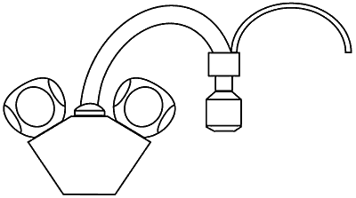
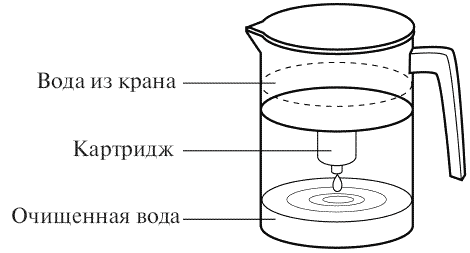
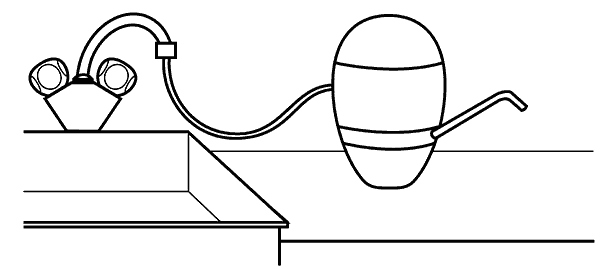
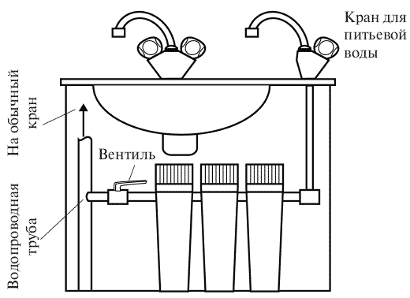

Классификация фильтров . для очистки воды

Бытовые фильтры можно классифицировать по-разному, и с одной разновидностью классификации, по физико-химическому методу очистки, мы уже познакомились в предыдущем разделе. Но для нас удобнее другая классификация – та, которая непосредственно связана с потребительскими свойствами фильтров и отражает их размер, стоимость, долговечность и место размещения в квартире. Давайте рассмотрим такую классификацию и используем ее в дальнейшем при описании бытовых фильтров.
Насадка. Небольшой и недорогой (50–80 руб.) фильтр, который навинчивается на водопроводный кран только тогда, когда мы хотим запастись очищенной водой (рис. 3). Несмотря на малые размеры, он может хорошо очищать воду, но его производительность (скорость течения струи) невелика (стакан в минуту), и ресурс небольшой – 300—1000 л (без учета возможной регенерации). Такие фильтры очень распространены, но их необходимо часто менять – раз в месяц (или два раза в месяц, в зависимости от потребностей вашей семьи).
Кувшинный фильтр. Он не прикрепляется к крану, а имеет конструкцию в виде изящно оформленной емкости. Сверху в ней расположена цилиндрическая вставка, внизу которой находится картридж (рис. 4), очень похожий на фильтр-насадку. Во вставку наливают воду, и она, просачиваясь через картридж под действием силы тяжести, капает в нижнюю часть емкости. Производительность таких фильтров от 0,1 до 0,5–1 л/мин при ресурсе картриджа 100–400 л. Их цена колеблется от 200–300 руб. до 800—1000 руб. (более дорогие – фильтры «Брита» с индикатором смены картриджа). Кувшинные фильтры самые популярные; их не надо подсоединять к крану, их можно использовать на даче, и, наконец, они сравнительно недороги и красивы.

Рис. 3. Насадка на кран с трубкой для отвода очищенной воды

Рис. 4. Фильтр кувшинного типа
Настольный или настенный фильтр. Это устройство, имеющее размер кувшина или коробки из-под обуви, которое на время фильтрации располагается рядом с краном или закреплено около крана на стене (рис. 5). Такой фильтр снабжен подводящей трубкой, которая временно закрепляется на кране, и другой трубкой, из которой вытекает очищенная вода. Картридж в фильтрах этого типа больше, чем в насадках и кувшинных фильтрах, и, соответственно, больше производительность – 1–1,5 л/м при ресурсе 3–5 тыс. л. Цена 200–400 руб. К этому типу я отнес и более дорогие электрохимические фильтры (например, «Изумруд»), которые закрепляются на стене, требуют подводки электропитания и практически вечны, но дороги – 3–4 тыс. рублей.
Стационарный фильтр. Обычно такой фильтр состоит из большого цилиндрического корпуса-патрона (примерно 30 см в высоту и 10 см диаметром), в котором размещается сменный картридж или пара картриджей (один над другим либо один вставляется внутрь другого).

Рис. 5. Настольный фильтр с трубками для подвода воды из крана и вывода очищенной воды

Рис. 6. Стационарный фильтр из трех патронов
Фильтр устанавливается над мойкой и соединяется с водопроводной трубой таким образом, что можно с помощью специального вентиля пустить воду на фильтр или перекрыть ее поток. Выход очищенной воды производится по шлангу, который соединен с дополнительным краном, установленным над раковиной; таким образом, мы отключаем фильтр, когда моем посуду под основным краном, и включаем его, когда нужна очищенная питьевая вода, поступающая через дополнительный кран. Существует несколько вариантов стационарных фильтров, и основные таковы:
– можно использовать не один, а два-три патрона с картриджами (рис. 6), реализующими разную технологию очистки (например, механический, ионообменный и сорбционный фильтры), и тогда ваш фильтр превратится в двух-или трехуровневую систему очистки воды (такой способ реализован в системах «Аквафор», «Гейзер» и фильтрах других фирм);
– можно совместить в рамках одного большого корпуса несколько систем очистки – грубой механической, более тонкой сорбционной, использовать ультрафиолетовый облучатель, блок омагничивания воды, устройства для ее насыщения серебром и полезными минералами и так далее (такой способ реализован в устройствах компании «ЭКО-АТОМ»);
– если вы не желаете устанавливать дополнительный кран, выход очищенной воды может производиться по шлангу в любую емкость;
– если водопроводная труба проходит в бетонной стене, то специалисты фирмы либо доберутся до нее, пробив нужное отверстие, либо предложат подводить воду из крана через гибкий съемный шланг (такой же способ, как для фильтров-насадок и настольных фильтров).
Для стационарных фильтров существует особенно большой выбор комплектующих элементов – тех или иных сменных картриджей, загрузок, мембран, дозирующих устройств, различных переходников, труб, шлангов и кранов. Цена такого фильтра зависит от комплектности и может составлять от 1000 до 6000–8000 руб. и более. Производительность – от 5–8 до 15–25 т воды. Иными словами, если регулярно менять картриджи (что обойдется в среднем в 100 руб. в месяц), такая система обеспечит вас водой до конца жизни.
Предфильтры. Внешне они похожи на патроны стационарных фильтров и предназначены для первичной очистки как холодной, так и горячей воды. Их врезают в трубы на входе воды в квартиру, они могут дополнять любой фильтр для очистки «на кране», и их задача – убрать с помощью грубой механической фильтрации крупный мусор: взвесь, частицы ржавчины и т. д. Производительность их велика, а ресурс зависит от загрязненности воды. Как уже отмечалось в предыдущей главе, в одних районах Петербурга картриджи к таким фильтрам нужно менять ежемесячно, а в других их хватает месяца на три. В зависимости от этого эксплуатация предфильтра обойдется вам в 100–300 руб. в месяц.
Магистральные фильтры, еще более мощные, чем стационарные, я рассматривать не буду, так как это системы скорее коллективного пользования, чем индивидуального. Они устанавливаются на входе воды в здание и очищают воду для многих квартир или для гостиницы, ресторана, завода по производству напитков.